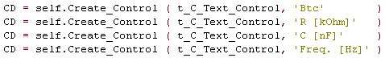
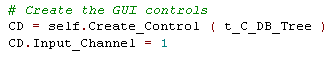
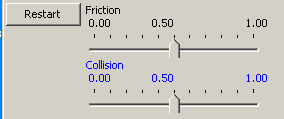
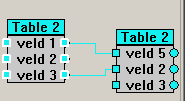

GUI Controls Overview  ( march 2009 )
( march 2009 )
Application Designer / Domain Expert / Control Designer / Core Developer
Introduction
|
Dialogs |
Selection / Value |
Interactive |
Display |
Graphics |
Misc |
|
|
CMD_Shel (obs?) Doc Viewer (obs?) Signal WorkBench |
Num Display |
2D Scene Float Canvas |
The code for using a control in a Brick can of course be fetched from the template manager,

|
Combines command window, standard / error output, notepad and document viewer (including webbrowsing). |
|
When a new file is selected, either through the browse button or by an Enter key in the edit box, the filename is returned in Par[1]. Both absolute and relative filenames are accepted. |
|
RadioBox occupies full width. |
|
Default range is [-10 .. 10] |
|
The Slider occupies full width. The Slider has extra settings: - Log, set to True for logarithmic - Format, specify a format string |
|
When a Button is pressed, the ordinal value [ 0 .. ] of the button is returned in the base Par. |
|
The edit boxes are aligned with PG.My_Control_dX2, if the caption texts is smaller than PG.My_Control_dX2. A new value is activated, when the focus is lost or when an Enter key is pressed. |
 |
|
Input is of type GridData, which is a list of rows, where each row contains the column elements for 1 row and where the first row contains the captions of the columns. This grid can also be used to display data or metadata of a database. |
|
The code editor is based on Scintilla. The editor has code highlight support, autocompletion and many more features. Another nice feature of this code editor is the code-snippet manager, of which the visibility is toggled by F7. And of course editing of the code templates is done in a separate but identical code editor. For more information see here. Because the Editor has no inputs, and we need 2 communication parameters (of which 1 is even an IO_Interaction), we need to declare "Extra_Pars". The Editor will hook itself to the main-menu of the form. |
|
Print the values of the inputs. With the input selector, you can select which signals will be shown. Every time an input changes, the selected input values are appended to the Text Control.
|
|
STD-Viewer can be used to catch the stdout and/or the stderr messages. Toggling the viewers redirections can be done dynamically. Select, Select All, Copy are both available through the RM-menu and through the acceleration keys. The associated brick has no inputs or outputs. There's only one such brick allowed.
Inside: The control has a special trick, that will redirect the outputs back to the original ports, as soon as the application window is closed. |
|
Shows the meta-data from a database as a Tree. Fields in a table / view / etc. can be selected / de-selected or selected for ordering. Every time a change is made, a new SQL statement is generated, which can be sent to the database. Normally this control will be the only control in the Brick, and the Input of the Brick will be coupled to the control, so Input changes will be redirected to the control. The Brick has to watch for changes of the second and / or third parameter and if found can send the parameter values directly to the outputs. self.P[0] = Input Connection, dBase meta-data Output, SQL statement (generated from selection) self.P[2] = table info ( generated from selection )  |
|
Shows an image of any format, even a filename of a picture is accepted. If an image format is not supported, you only have to extend the procedure picture_support.To_Bitmap.""" |
|
This control is a complete embedding of VPython. Together with VPython_Controls and a editor-control, you get a powerful IDE for developing VPython 3D animations. |
|
 |
This a dynamic control, directly generated by the code from the VPython control. See VPython control. |
|
Very power full display for graphs. It can handle multiple signals, which might be one of the iterable types, like, list, tuple, array, s_list, ....The signals may differ in length. The lower part of the display shows the total length of 1 signal in a auto scaling min-max mode (strip chart recorder) and this part is used to make a selection in time of all the signals. The upper graph shows the selected part of all signals, with easy to set scales (or auto scales), has 2 measurement cursors and free positioning memo field.
|
|
This is an interactive display, special designed for realtime display and control. Some or all of the recorded signals can be shown in the main signal window. Settings of the signals can be done through the labels on top and bottom, with the speed-buttons on the left and through an extensive grid on the second page. On the bottom you see an history window where one of the signals can be displayed in min/max mode for the total recording (auto compression). This window can also be used to look back in time, while recording continuous. Although not strictly necessary, this control will often be the only control in a brick.
The picture shows a realtime ECG and bloodpressure signal with online analysis of the bloodpressure (yellow line is the calculated Systolic Pressure). Each signal can be delayed to compensate for realtime filter delays. During freeze, 2 measurement cursors are available. Accepts the following MetaData: Signalname, Units, Calibrate (only the gain/offset tuple for this moment), DisplayRange. |
for more information see here |
|
This is a graphical window for displaying (real-time) X-t signals, it should be faster than MatPlotLib, but slower and less flexible that ScopePlot. Background color doesn't work. |
|
Experimental Control, it should be possible to turn the LED on / off and give it different colors. |
|
Supports USB-6008, USB-6009, SoundCard, FysioFlex, Midac_Files. see for more information: pw_brick_adc.html
|
|
|
 |
This is a beginning of a Visual SQL builder, based on the same canvas as PyLab_Works itself. No real functionality yet. |